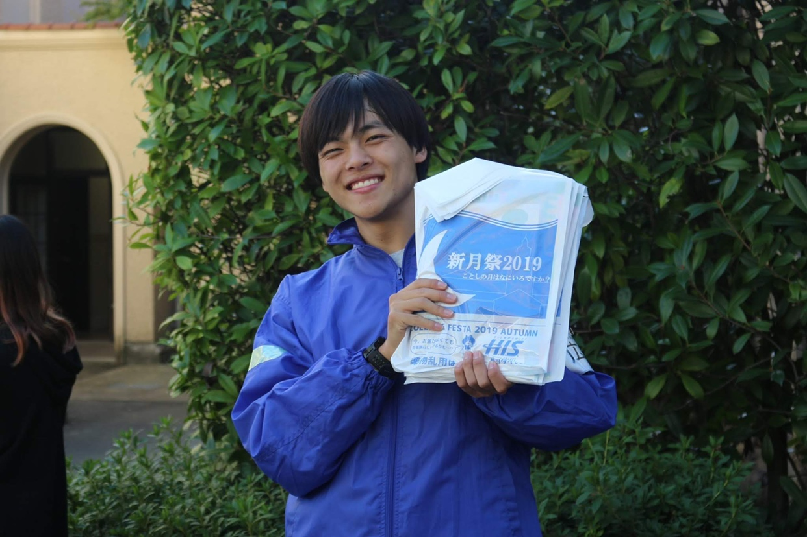

大学祭総部について
関西学院大学大学祭総部新月祭実行委員会委員長
作本 育海 (経済学部3回)

大学祭総部新月祭実行委員会は、毎年10月下旬から11月中旬にかけて神戸三田キャンパス・西宮上ケ原キャンパス・西宮聖和キャンパスそれぞれで行われる、関西学院大学における大学祭「新月祭」を、開催の提起・企画・運営を行う団体です。毎年、100を超える学内団体の参加、延べ5万人以上の来場者を誇る、関西屈指の大学祭の１つです。
2020年は、新型コロナウイルスの影響を受けオンラインでの開催となりました。
大学祭総部は3キャンパスにまたがって活動するため、キャンパスを超えて学部問わず交流できるのが特徴です！学祭開催期間を中心に学年問わず業務を行うため、学祭終了後の達成感もひとしおです！学生生活の良き思い出を作る場となり、また、充実した学生生活を過ごせます！昨年は実施できませんでしたが、例年全実行委が集まりキャンプを行ったり、夏旅行に行ったりと学祭運営以外にも行事は沢山あります！
是非私たちと一緒に学生生活を有意義なものしにしていきましょう！皆さんの入部お待ちしています！！